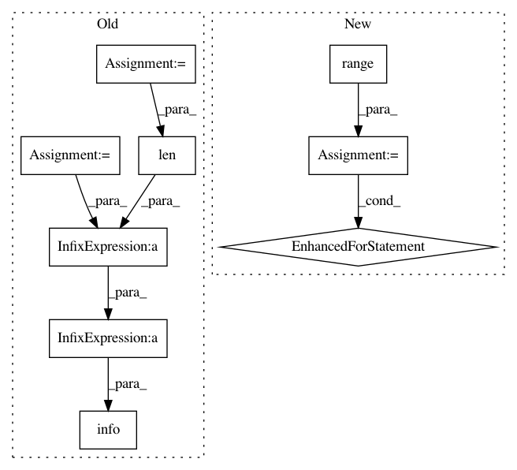

cd8217b051fab48c4155dc20ad58d6cf7f6fc3a2,evaluate.py,,main,#Any#,19
Before Change
FLAGS.save_images = False
logging.info("evaluate model performance")
test_filenames = util.get_files_in_directory(FLAGS.data_dir + "/" + FLAGS.test_dataset)
model = DCSCN.SuperResolution(FLAGS, model_name=FLAGS.model_name)
model.build_graph()
model.build_summary_saver()
model.init_all_variables(load_model_name=FLAGS.load_model_name)
total_psnr = total_mse = 0
for filename in test_filenames:
mse = model.do_super_resolution_for_evaluate(filename, output_folder=FLAGS.output_dir, output=FLAGS.save_results)
total_mse += mse
total_psnr += util.get_psnr(mse)
logging.info("\n=== Average [%s] MSE:%f, PSNR:%f ===" % (
FLAGS.test_dataset, total_mse / len(test_filenames), total_psnr / len(test_filenames)))
if __name__ == "__main__":
tf.app.run()
After Change
else:
test_list = [FLAGS.test_dataset]
for i in range(FLAGS.tests):
model.load_model(FLAGS.load_model_name, i, True if FLAGS.tests > 1 else False)
for test_data in test_list:
test(model, test_data)
def test(model, test_data):
test_filenames = util.get_files_in_directory(FLAGS.data_dir + "/" + test_data)
total_psnr = total_mse = 0
In pattern: SUPERPATTERN
Frequency: 3
Non-data size: 9
Instances
Project Name: jiny2001/dcscn-super-resolution
Commit Name: cd8217b051fab48c4155dc20ad58d6cf7f6fc3a2
Time: 2017-07-07
Author: jin.us2@ponkotsu.jp
File Name: evaluate.py
Class Name:
Method Name: main
Project Name: IBM/adversarial-robustness-toolbox
Commit Name: e06fa429553cd8a183f4fe57ea07e311b4f6ef4e
Time: 2020-01-15
Author: beat.buesser@ie.ibm.com
File Name: tests/classifiers/test_tensorflow.py
Class Name: TestTensorFlowClassifier
Method Name: test_predict
Project Name: jiny2001/dcscn-super-resolution
Commit Name: 11630ab1e51124079549a99e0c2e06c8c43ce928
Time: 2017-07-06
Author: jin.us2@ponkotsu.jp
File Name: evaluate.py
Class Name:
Method Name: main